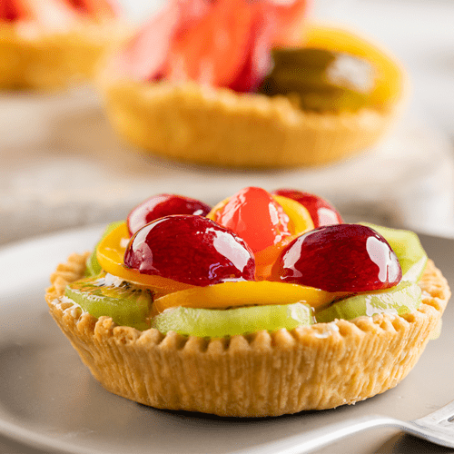

fruit cake |
|
|  |
Recipe |
|
For the base dough: 250 g wheat flour (pastry or soft flour, and if not, normal flour) 40 g sugar 125 g butter (very cold) 100 g water (very cold) A pinch of salt (approx. 5 g) For the pastry cream filling: 500 ml whole milk 4 egg yolks 125 g sugar 50 g fine corn flour 1 teaspoon vanilla essence For the glaze: 3 g neutral gelatin (approximately half a sachet) 215 ml water Also: assorted fruit (2 kiwis, 2 apricots, a bunch of seedless grapes, and 10-12 raspberries). |
|